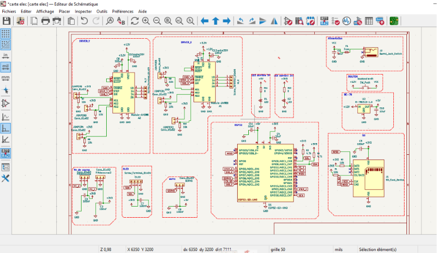
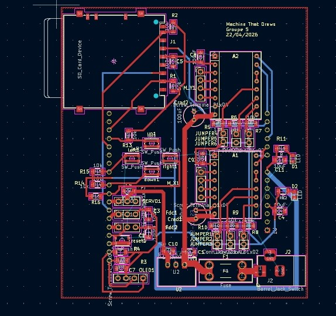

Partie électronique
Choix technique du schéma électronique (KiCad)
Schéma bloc et architecture
La carte a été conçue sous KiCad en séparant clairement les fonctions en blocs : alimentation 12 V/5 V/3,3 V, commande moteurs pas à pas (2× A4988), pilotage servo, microcontrôleur ESP32‑S3, interface utilisateur (boutons, LED, OLED I²C) et stockage sur carte SD. Les alimentations sont structurées autour d’une entrée 12 V protégée par fusible et interrupteur, puis d’un convertisseur 12 V→5 V (module RE‑78) suivi de la distribution 5 V vers le servo. Des condensateurs électrolytiques de forte capacité sont placés près des drivers, complétés par des céramiques de 100 nF au plus près des broches d’alimentation des CI, afin de filtrer les pointes de courant. Les deux drivers A4988 sont intégrés avec leurs signaux STEP/DIR reliés à l’ESP32‑S3 via des GPIO dédiées, et leurs broches de configuration (MS1–MS3, ENABLE, RESET/SLEEP) sont polarisées par des résistances de pull‑up/pull‑down de 10 kΩ et des cavaliers, ce qui impose des états par défaut au démarrage tout en permettant de modifier le micro‑pas ou l’activation par simple changement de jumper. Les fins de course sont câblées en tout ou rien avec des résistances de tirage vers 3,3 V pour garantir des états logiques stables. L’interface I²C (OLED) et le lecteur de carte SD sont rattachés à l’ESP32‑S3 sur des GPIO sélectionnés pour éviter les broches critiques (USB natif, strapping). Le bus I²C comporte des résistances de pull‑up de 4,7 kΩ vers 3,3 V, valeur choisie comme compromis entre courant de ligne et rapidité des fronts. Les LED d’état sont polarisées et mermettent de vérifier l’arrivée du courant.

Routage du PCB et dimensionnement
Le routage a été réalisé sur un PCB double face en définissant des classes de nets distinctes pour la puissance et les signaux. Les pistes logiques (GPIO, I²C, SD, signaux STEP/DIR) sont routées avec une largeur standard de l’ordre de 0.6 mm, suffisante pour des courants de quelques mA. Les pistes d’alimentation 12 V et les retours de masse associés aux drivers moteurs ont été élargis à 1.5 mm pour les segments unitaires et davantage pour le tronc principal entre le connecteur, le fusible et la distribution vers les drivers. Ce choix est basé sur une estimation de courant maximal d’environ 3 A à 3.5A pour l’ensemble de la machine (deux moteurs pas à pas vers 1 A chacun, servo et logique). Un plan de masse a été implémenté chaque couche, connecté à toutes les références GND. Ce plan offre un chemin de retour à faible impédance sous les pistes de signaux, réduit la surface des boucles de courant. Il contribue également à homogénéiser le potentiel de masse sur la carte, en diminuant les chutes de tension parasites dans les retours de courant. L’implantation des composants a été pensée pour limiter les longueurs de pistes de puissance : les drivers sont placés à proximité immédiate des connecteurs moteurs et des condensateurs 12 V, alors que l’ESP32‑S3 est positionné de façon centrale avec les interfaces (boutons, OLED, SD) en bord de carte pour faciliter le câblage sur la machine. Cette organisation réduit les intérferences entre puissance et signaux faibles et simplifie le débogage.

Réalisation, brasage et mise en service
La carte a été fabriqué, puis les composants ont été soudés manuellement. Les boîtiers CMS de petite taille (condensateurs 100 nF, résistances de tirage, composants de l’ESP32‑S3) ont été brasés au fer à souder, en commençant par les composants les plus bas puis en terminant par les connecteurs et borniers. Les principaux risques identifiés concernaient les ponts de soudure entre pads rapproché. Avant la mise sous tension complète, un contrôle de continuité a été réalisé entre chaque rail d’alimentation et la masse, ainsi qu’un contrôle visuel des polarités (diodes, électrolytiques, connecteurs). La première alimentation s’est faite sans driver puis les sous‑ensembles ont été testés séquentiellement (drivers sans moteurs, ensuite avec moteurs, puis servo, OLED, SD, enfin logiques et boutons). Cette approche progressive a permis d’identifier rapidement d’éventuels défauts de brasage ou inversions de connecteurs.
Difficultés rencontrées et regard critique
Plusieurs difficultés ont été rencontrées lors de la réalisation. D’abord, la densité du routage autour de l’ESP32‑S3 et des connecteurs a conduit à des compromis sur les longueurs et les angles de certaines pistes, avec un risque accru de couplage entre signaux de puissance et signaux logiques. Ensuite, le brasage manuel des composants CMS serrés a demandé une grande vigilance pour éviter les courts‑circuits. Ensuite, le format global de la carte est resté relativement important par rapport au nombre de fonctions intégrées. Une optimisation plus poussée de l’implantation (regroupement plus serré des sous‑blocs, repositionnement des connecteurs) aurait permis de réduire l’encombrement et les longueurs de certaines pistes d’alimentation. La taille actuelle reste fonctionnelle, mais non optimisée pour une éventuelle industrialisation ou une intégration mécanique très contrainte. Par ailleurs, les largeurs de pistes d’alimentation ont été surdimensionnées sur plusieurs segments (12 V principal, retours de masse moteurs) par rapport aux courants réellement mesurés. Ce choix améliore la marge thermique et la robustesse, mais se fait au détriment de la compacité et laisse peu de place pour un éventuel ajout de fonctions. Une optimisation ultérieure pourrait affiner ces largeurs à partir des courants réels de la machine. Enfin, le brasage manuel des composants CMS dans des zones denses (ESP32‑S3, drivers, lecteur SD) a constitué un point délicat : risque de ponts de soudure, accessibilité limitée entre les broches et nécessité de multiples contrôles visuels. Pour une version ultérieure, le recours à assemblage industriel permettrait d’améliorer la répétabilité (stabilité non altérée par des potentiels erreurs de brasage et donc machine qui répond toujours de la même façon au mm prés lorsque l’instruction est identique) et de réduire le temps de production.
Routage PCB
Retrouvez ci-dessous l'aperçu interactif du PCB en 3D.